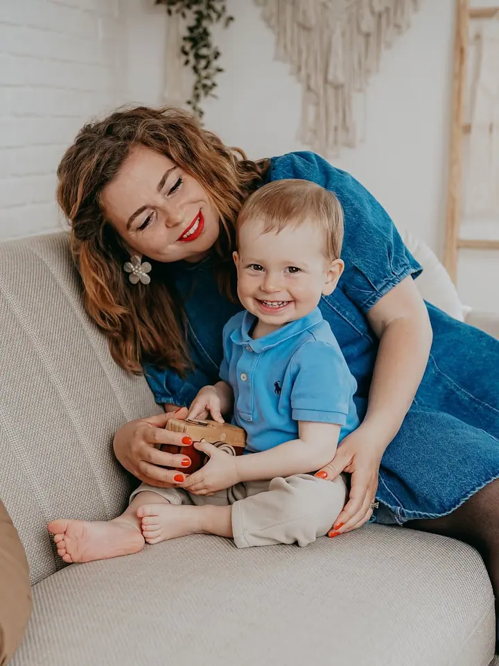
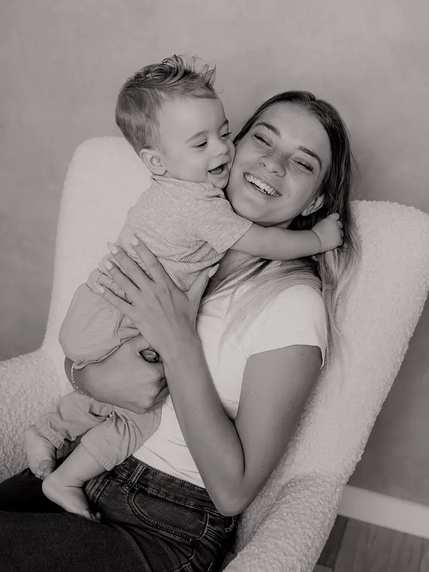
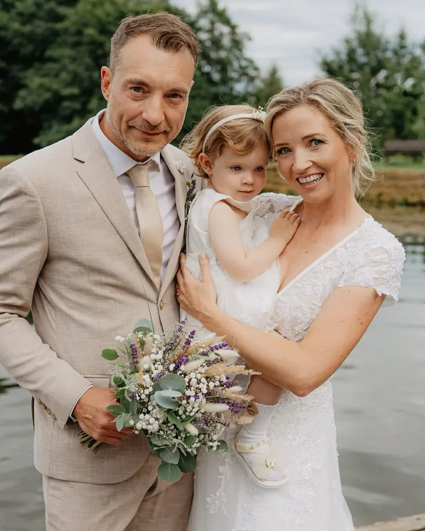
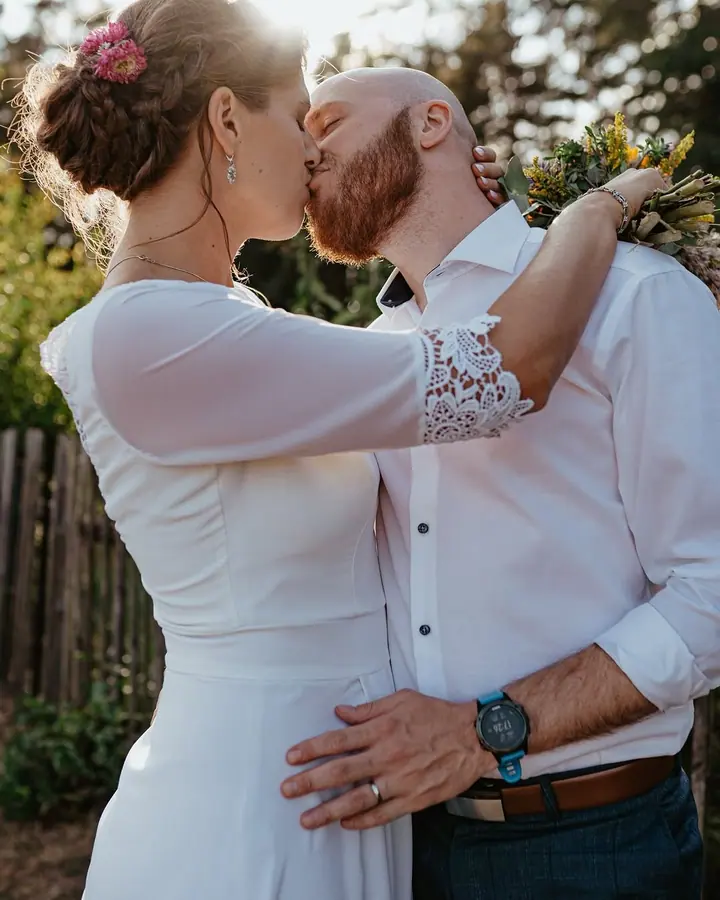
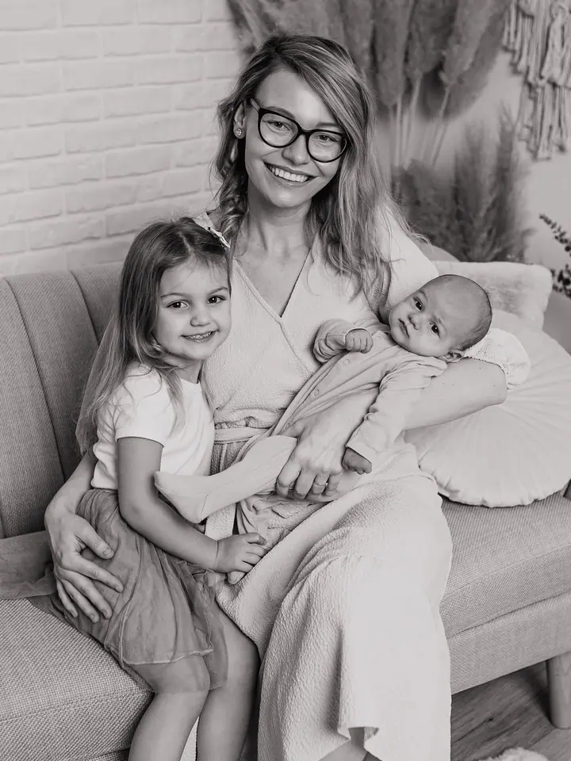
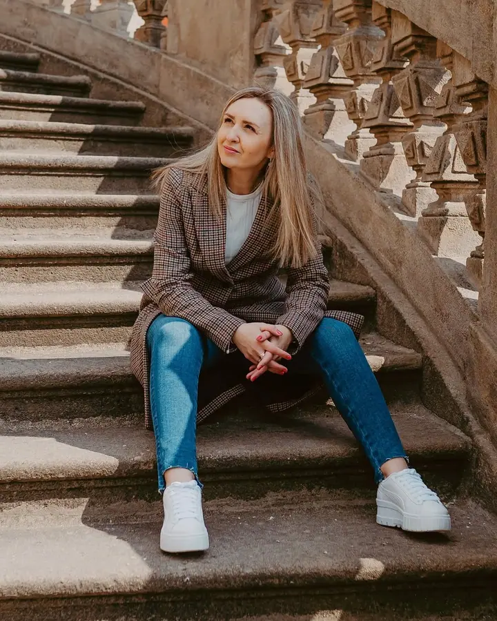

Miminka a batolátka
Novorozence a malá miminka fotím v klidu a teple ateliéru. Malý balíček s 8 upravenými fotkami stojí 2000 Kč, velký s 15 fotkami 3000 Kč.





Jmenuji se Marie Bibíková a ve svém ateliéru v centru Děčína fotím miminka, děti i celé rodiny. Fotím také portréty, páry a svatby, v ateliéru i venku.
Více o mně
„Díky fotografii můžeme zastavit čas a zachytit okamžiky rodinného štěstí, rodičovské lásky, dětství a uložit je do svého rodinného alba.“
— Marie Bibíková
Novorozence a malá miminka fotím v klidu a teple ateliéru. Malý balíček s 8 upravenými fotkami stojí 2000 Kč, velký s 15 fotkami 3000 Kč.
Fotím vaši rodinu a děti tak, jak jsou právě teď. Ráda nafotím i narozeninové focení nebo tematické focení, třeba vánoční, jarní či dýňové.
Portréty fotím v elegantním a minimalistickém stylu v přirozeném světle ateliéru. Dámám můžu zajistit make-up a účes od profesionální kosmetičky.
Ráda s vámi strávím váš svatební den a nafotím vás i vaše blízké. Ceník svatebních balíčků vám pošlu na vyžádání.
Jmenuji se Marie Bibíková a už pět let fotím ve vlastním ateliéru v Podmokelské ulici v Děčíně. Je to světlý, elegantní prostor, kde se dobře cítí miminka, děti i dospělí.
Nejvíc fotím miminka, batolátka a rodiny. Chci vás zachytit takové, jací jste právě teď, aby vám fotky zastavily čas a měli jste je ve svém rodinném albu. Kromě toho fotím těhotenské focení, páry, portréty, boudoir, business fotky a svatby.
Každé roční období má své kouzlo, a proto ráda připravuji tematická focení, od Valentýna přes levandulové pole až po Vánoce. Když máte vlastní nápad na téma, ráda se s vámi domluvím.
Objednat se můžete telefonicky, e-mailem nebo přes Facebook, WhatsApp či Instagram. Společně vybereme, jestli budeme fotit v ateliéru, nebo venku.
Podle typu focení spolu strávíme zhruba 35 minut až hodinu a půl. Na webu najdete tipy, jaké oblečení si na focení vzít.
Náhledy vám pošlu do online galerie Pixin, kde si sami označíte fotky, které se vám líbí.
Upravené fotky posílám v digitální podobě, barevně i černobíle, přes odkaz ke stažení z uschovna.cz.
Ateliér mám v centru Děčína na adrese Podmokelská 793/12. Fotím ale i venku, podle toho, co vám bude bližší.
Focení novorozenců a malých miminek začíná na 2000 Kč za 8 upravených fotek, velký balíček s 15 fotkami stojí 3000 Kč. Portrét, boudoir, glamour nebo business focení stojí 2500 Kč. Každá další fotka nad rámec balíčku je za 150 Kč.
Ano, doporučuji kvalitnifotky.cz. S mým kódem MARIEBIBIKOVA tam máte slevu 10 % na celou objednávku.
Dárkový poukaz na všechna focení si u mě můžete koupit kdykoli během roku.